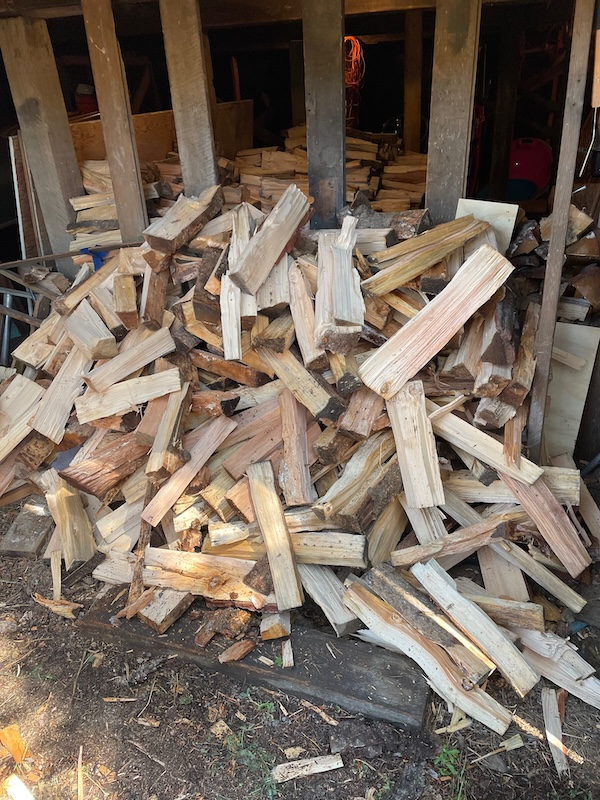

Image Alt Text Generator Results
AI prompts used:
- You are a helpful alt-text generator assisting visually impaired users. Generate a clear and concise caption (15-30 words) that highlights the most important subject and action. Focus only on essential details, avoiding unnecessary background elements. Use simple, everyday language and avoid overly descriptive or poetic words.
- What's in this image? Be brief, it's for image alt description on a social network. Don't write in the first person.
- You write alt text for any image pasted in by the user. Alt text is always presented on a single line so it can be used easily in Markdown images. All text on the image (for screenshots etc) must be exactly included. A short note describing the nature of the image itself should go first.
Image: san-juan-mountains.jpg

Alt Text 1:
Snow-covered mountains rise behind a wooden fence, with a field of yellow wildflowers in the foreground and a clear blue sky.
Alt Text 2:
Snow-capped mountain range under a clear blue sky, with a wooden fence and golden grasses in the foreground.
Alt Text 3:
Note: Scenic mountain landscape with a wooden fence in the foreground.
Wide mountain landscape with snow-capped peaks under a deep blue sky, a golden meadow in the foreground, and a weathered wooden split-rail fence crossing the scene.
Image: HoodRiver.jpg

Alt Text 1:
A rainbow arches across the sky over a rural farm, with a house, trees, and wide grassy fields in the foreground.
Alt Text 2:
Pastoral landscape with a bright rainbow across a partly cloudy blue sky, a green meadow and fences in the foreground, trees on the left, and a distant house with mountains in the background.
Alt Text 3:
Note: Rural countryside with a rainbow. A wide field with dry grass in the foreground, a wooden fence across the pasture, a red-roofed building in the middle distance, clusters of evergreen trees to the left, a fence line and small trees on the right, and distant mountains under a blue sky with white clouds and a large rainbow arching across the scene.
Image: Firewood.jpeg

Alt Text 1:
A large pile of chopped firewood stacked under a shed, with many split logs scattered on the ground.
Alt Text 2:
Pile of chopped firewood stacked in a shed, with various-sized light-brown wood pieces.
Alt Text 3:
Note: Photo of a pile of chopped firewood in a shed.
A large pile of split wooden logs of varying sizes and colors stacked against vertical support posts inside a dim shed, with more wood and clutter visible in the background.
Image: GasPump.jpeg

Alt Text 1:
Exxon gas pump display shows a purchase of 17.64 gallons for $81.13, indicating how much gas was dispensed and the total paid.
Alt Text 2:
Blue Exxon gas pump with the Exxon logo; digital display shows a purchase of $81.13 for 17.640 gallons.
Alt Text 3:
Close-up of a blue Exxon gas pump display; the screen shows the numbers 81.13 on the top line and 17.640 on the bottom line, with on-screen text Purchase, $, and Gallons visible, and the Exxon logo at the top.
Image: Rossi2.png

Alt Text 1:
A race car parked in a garage, with the Java House sponsor and the number 20 on its yellow rear wing.
Alt Text 2:
Blue-lit garage scene with a Formula-style race car in black and yellow livery, featuring the "JAVA HOUSE" sponsor on the side and the number 20 on the rear wing.
Alt Text 3:
Note: A Formula-style race car in a garage with sponsor branding.
JAVA HOUSE on the sidepod; LIQUID SCIENCE on the nose; Firestone on the tires; 20 on the yellow rear wing; HURCO on the wall sign.
Image: Slack.png

Alt Text 1:
Slack logo: a colorful, rounded grid icon to the left and the bold black word Slack to the right.
Alt Text 2:
Slack logo: multicolored rounded symbol on the left with the word slack in bold black lowercase letters.
Alt Text 3:
Slack logo showing the colorful Slack icon on the left and the bold black word slack on the right. slack
Image: Coach.png

Alt Text 1:
A toy figurine named Coach Cathy stands in its packaging, wearing a Stanford shirt and red shorts, with a water bottle, clipboard, volleyball, and sandals.
Alt Text 2:
Carded toy figure of a smiling blonde coach in a Stanford shirt and red shorts, with accessories: whistle, clipboard, water bottle, volleyball, and sandals; labeled “COACH CATHY.”
Alt Text 3:
Toy figure packaging featuring a coach character.
COACH CATHY; a smiling blonde toy figure wearing a white STANFORD shirt and red shorts, with a black whistle, a blue water bottle, a clipboard with a beige pad, a yellow volleyball, and a pair of black sandals in blister packaging, and a USAWP shield logo on the top right.